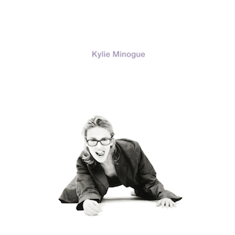
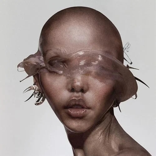
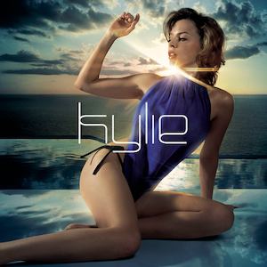
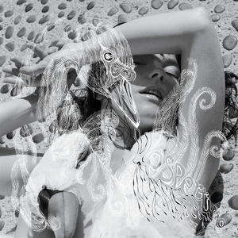

Nghe nhạc
- Coi âm nhạc như máu chảy trong huyết quản.
- Nghe nhạc hơn 24 tiếng mỗi ngày.
- Có hai bộ tai nghe.
- Cổ đông lớn nhất của Spotify.
- Dòng nhạc yêu thích: Electro-pop, Electronica
- Thường xuyên mua đĩa CD vật lý các album yêu thích
| STT | Album | Nghệ sĩ | Năm ra mắt | Ảnh bìa album | Nghe thử một bài |
|---|---|---|---|---|---|
| 1 | Confessions on a Dance Floor | Madonna | 2005 |  |
Jump - Confessions on a Dance Floor |
| 2 | brat | Charli xcx | 2024 |  |
Club Classics - brat |
| 3 | Ray of Light | Madonna | 1998 |  |
Ray of Light - Ray of Light |
| 4 | Pure Heroine | Lorde | 2013 |  |
Buzzcut Season - Pure Heroine |
| 5 | Impossible Princess | Kylie Minogue | 1997 |  |
Limbo - Impossible Princess |
| 6 | Kylie Minogue (KM94) | Kylie Minogue | 1994 |  |
Falling - Kylie Minogue (KM94) |
| 7 | Eusexua | FKA Twigs |
Đợt 1: 2025 Tái phát hành: 2025 |
 |
Girl Feels Good - Eusexua |
| 8 | Eusexua Afterglow | FKA Twigs | 2025 |  |
Slushy - Eusexua Afterglow |
| 9 | Light Years | Kylie Minogue | 2000 |  |
Light Years - Light Years |
| 10 | Fever | Kylie Minogue |
Thế giới: 2001 Hoa Kỳ: 2002 |
 |
Come Into My World - Fever |
| 11 | Vespertine | Björk | 2001 |  |
Pagan Poetry - Vespertine |
| 12 | Addison | Addison Rae | 2025 |  |
Times Like These - Addison |
| 13 | Midnight Sun | Zara Larsson | 2025 |  |
Hot & Sexy - Midnight Sun |
Viết truyện, viết nhật ký, làm thơ
- Văn học đóng vai trò giải bày tâm tư, suy nghĩ thật lòng, quan điểm thầm kín của bản thân - nhiều điều mà ít ai biết được.
- Giúp bản thân không suy nghĩ quá nhiều, quá tiêu cực; giữ tinh thần lạc quan, hòa đồng, vui vẻ.
- Có trang Facebook riêng tên "Different Blvd" để viết nhật ký ẩn danh.
| STT | Tên | Ảnh | Thơ/Truyện |
|---|---|---|---|
| 1 | Lễ kỷ niệm 50 năm Giải phóng miền Nam (30/4/1975-30/4/2025) |  |
Người tiến trước nhường từng mảnh từng hơi Người đi sau giành từng miếng từng lợi Chuyện vụn đời, như sóng vỗ ngoài khơi Rồi ngước nhìn, lòng tự hào phơi phới Tiếng xé trời Mỹ “ban phát dân chủ” Nay rền vang cho hòa bình thêm tươi. |
| 2 | Hùng Vương Những Mùa Nhớ 2025 |  |
Qua kẽ lá, khẽ thở. Qua tán cây, khẽ rung động. Kỉ niệm mùa hạ — cái nắng ghé lá vàng, khẽ cười, cười cho tuổi trẻ lỡ thiên thu. |
| 3 | Sớm Mai |  |
Trong cái nắng của sớm mai, lẻn vào làn khí lạnh của hậu khí mùa mưa, có một giấc mơ đang được ấp ủ. Ở đâu đó trong sân trường, mình đã bước chân vào khoảng chân trời của quá khứ, đang bước chân vào khoảng trắng của kỉ niệm. Một năm trước, khi dần làm quen với môi trường mới, mình chỉ muốn trải nghiệm thật nhiều. Một năm sau, mình chỉ muốn chậm lại, và tận hưởng từng giây phút cuối cùng của cấp 3. Nếu mình có một giấc mơ chẳng muốn thức giấc, chỉ mong sao nó có thể tồn tại mãi mãi. |
Quay video, làm video
- Xuất phát đơn thuần từ làm video để gửi bài tập trên trường, dần dần trở thành sở thích tay trái của bản thân.
- Thích làm dạng video dài, chi tiết, chủ đề gần gũi, xoay quanh các hoạt động thường ngày (và đôi khi không thường ngày lắm).
- Phần mềm dựng video: Filmora, CapCut, Edits.
- Vài video đã đăng công khai:
Chụp ảnh, chỉnh sửa ảnh
- Chụp ảnh chính là lúc Phát cảm thấy kết nối nhất với các thành viên khác trong lớp, kéo Phát trở về thực tại và thực sự tập trung vào những thứ bản thân đang làm.
- Đề cao việc làm việc với file ảnh raw vì ảnh raw quyền kiểm soát ảnh cao nhất.
- Có quan điểm sử dụng AI nhẹ nhàng hơn: Không bài trừ hoàn toàn, nhưng chỉ sử dụng AI tạo sinh ở mức độ tối thiểu (Xóa vật thể), không sử dụng AI TRONG CÁC KHÂU KHÁC khi làm việc với ảnh chụp lớp.
- Sử dụng Instagram như một "bảo tàng" ảnh lớp.
- Ứng dụng chỉnh sửa: GIMP, Canva, Affinity, Snapseed.
- Hãy vào Instagram của Phát để xem ảnh
Thiết kế ấn phẩm truyền thông cho bản thân, lớp và câu lạc bộ
- Thích sự tối giản, thiên hướng tối giản.
- Cho lớp và câu lạc bộ: nhiều phong cách thiết kế khác nhau, nhiều màu sắc rực rỡ.
| STT | Tên | Ảnh |
|---|---|---|
| 1 | 19/11 |  |
| 2 | BONDING HVOC |  |
| 3 | CỤC MÁU ĐÔNG HVOC |  |
Nghiên cứu xã hội
- Thích xoáy vào các vấn đề nhức nhối hoặc gây tranh cãi trong xã hội.
- Hướng tới xã hội tiến bộ, công bằng.
- Tuy nhiên chưa từng tham gia Cuộc thi Khoa học Kĩ thuật nào và bản thân rất tiếc vì điều đó (lên Đại học gỡ).